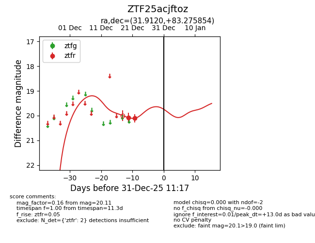
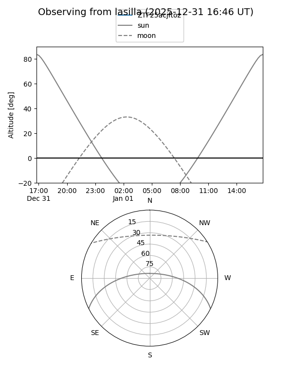
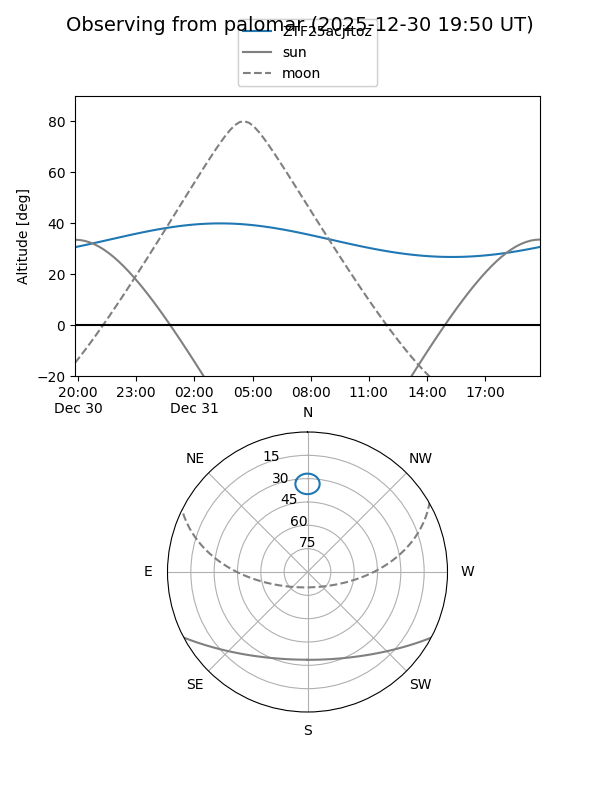
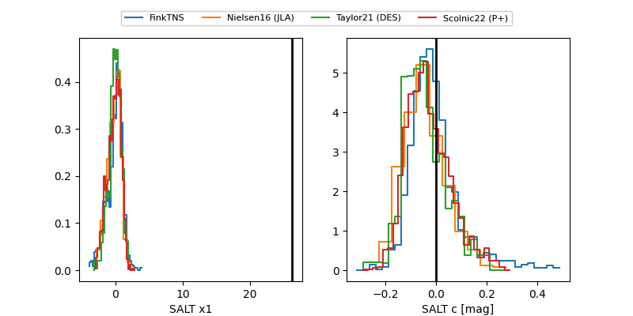

ZTF25acjftoz
Target ZTF25acjftoz at 2025-12-31 18:00
Aliases and brokers:
FINK: link
Lasair: link
ALeRCE: link
alt names
ZTF25acjftoz (ztf,fink_ztf)
Coordinates:
equatorial (ra, dec) = 31.9120,+83.27585
equatorial (HMS+DMS) = 02:07:38.87,+83:16:33.08
galactic (l, b) = (125.2745,+20.75348)
Flags:
Photometry:
last ztfr=20.11
2 ztfr detections
Lightcurve

Visibility


Additional plots
